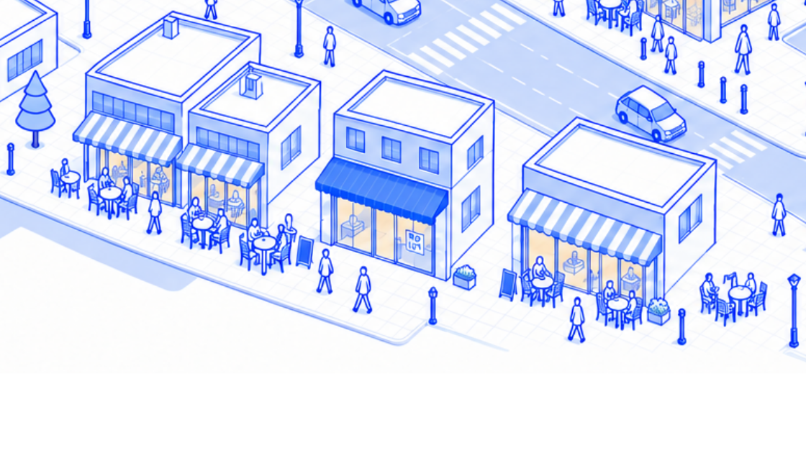
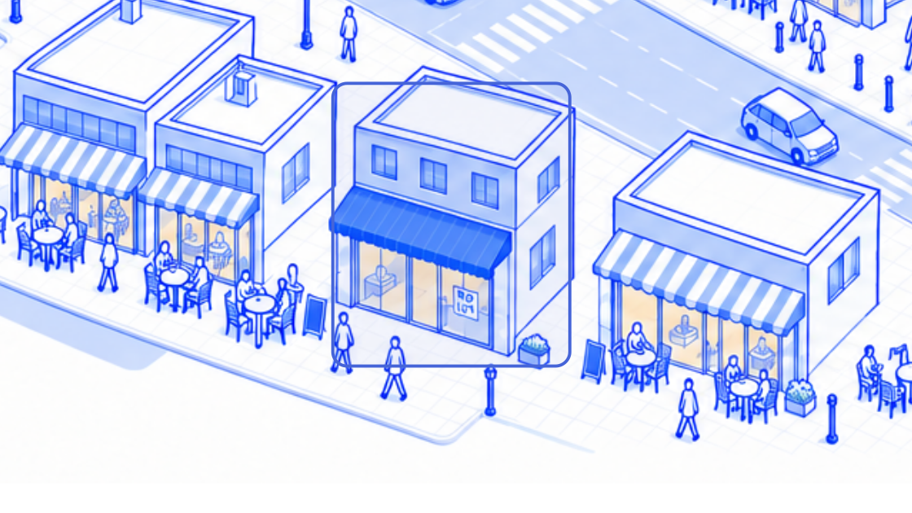
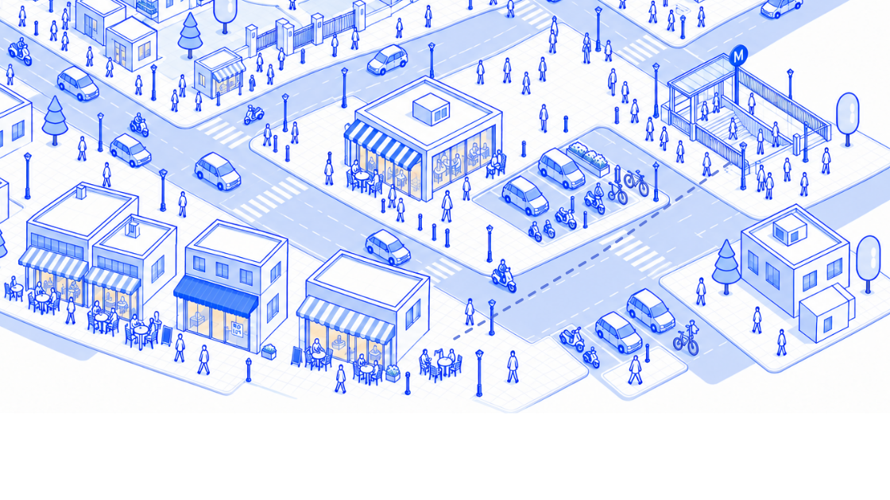
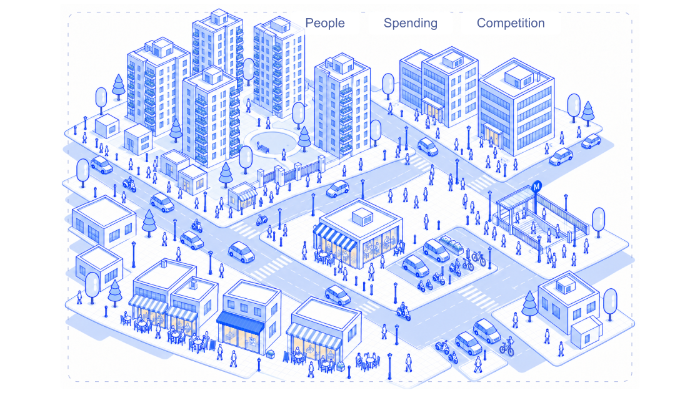
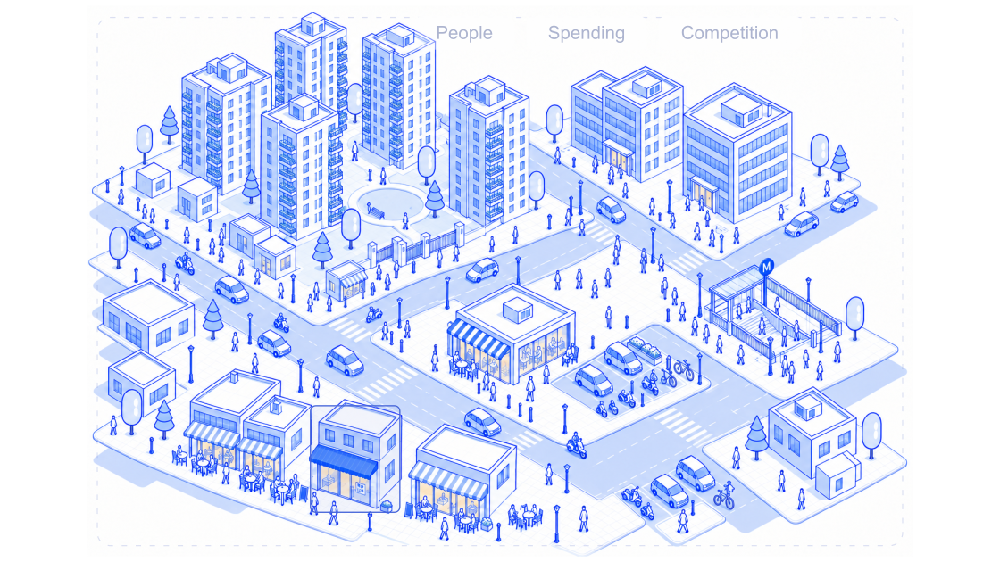

01 / The idea
Sid wanted a café of his own.
This busy café lane looked like a promising place.
Presentation frames from the live story’s camera data, shown at the case study’s 560px maximum width.
Open the interactive case study · Story copy · Export details

01 / The idea
This busy café lane looked like a promising place.

02 / The assumption
Surely there was room for one more?

03 / The doubt
The metro explained some of the crowd. It didn’t tell Sid who would buy.

04 / The context
Who lives and works nearby? What do they spend? What do the existing cafés already offer?

05 / The response
GeoMarketeer helps businesses understand a neighborhood before choosing where to open.